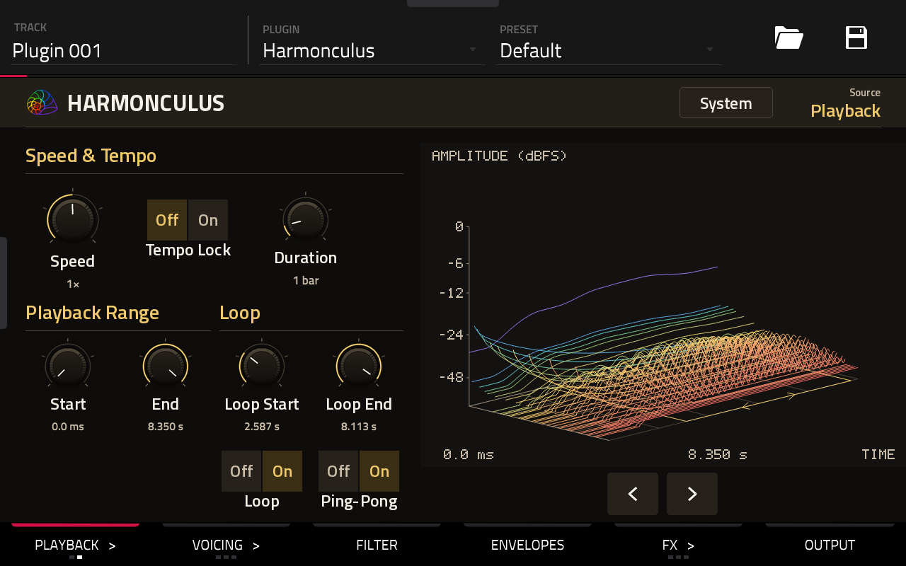

Harmonculus for MPC
Turn a WAV sample into an instrument, or start with a factory preset. Shape the harmonics and play the result from the pads or sequencer.
Available for Gen 1 and Gen 2 standalone MPC. Use MPC OS 3.10.1 or later with External Plugin Support. Gen 1 owners can also use legacy RAW Loader on MPC OS 3.9.1.
Try free for 14 days.
One purchase includes MPC and desktop (macOS, Windows and Linux).

Install online on your MPC
New to RAW Loader? Follow the setup guide for MPC OS 3.9.1 on Gen 1 or MPC OS 3.10.1 and later.
- Connect your MPC to the internet and open RAW MPC Plugin Loader on a Plugin track.
- Choose RAW Catalogue, select Harmonculus and tap Install.
- Save your project, return to RAW and tap Continue, then Restart Now. Open Harmonculus on a Plugin track after restart.
Install from ZIP
Choose the Harmonculus 0.2.0 ZIP for your MPC.
- Gen 1 MPC, including MPC One+ · Download ARMv7 ZIP
- Gen 2 MPC · Download AArch64 ZIP
Install with RAW Loader
Use the legacy loader on Gen 1 with MPC OS 3.9.1 or the stock loader on MPC OS 3.10.1 and later. Copy the ZIP into RAW-MPC-Plugins at the root of your USB stick or SD card. Open USB Files in RAW Loader and install the ZIP. Save your project before restarting MPC.
Install with Akai External Plugin Support
On MPC OS 3.10.1 and later, unzip the download and copy the complete Harmonculus folder, including plugin.json, directly into VST2 Plugins at the root of your SD card or USB stick. Create VST2 Plugins if needed.
In Menu → Preferences → Enhancements, turn on Enable Enhancements and External Plugin Support. Save your project and restart MPC. Open Harmonculus from External Plugins on a Plugin track. Leave the drive connected while using it.
Activate Harmonculus
Already own Harmonculus? Use your existing licence to activate on MPC.
In Harmonculus, open System and tap Activate by QR. Scan the code with your phone, then start your free 14-day trial in Moonbase or select a Harmonculus licence with a free activation.
To activate offline, use Export Device File in System, activate through Moonbase on another device, then use Import Licence File on the MPC.